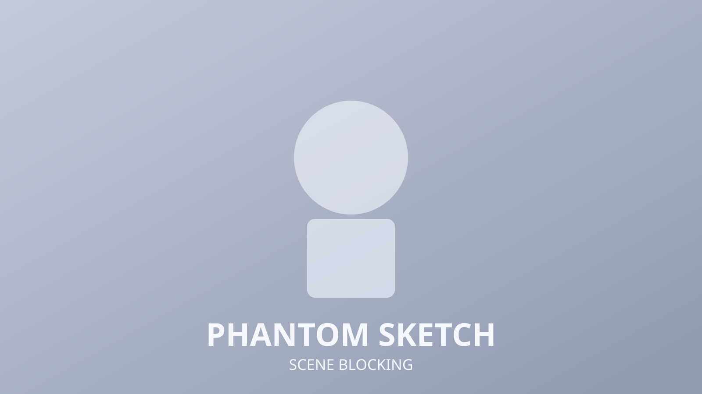
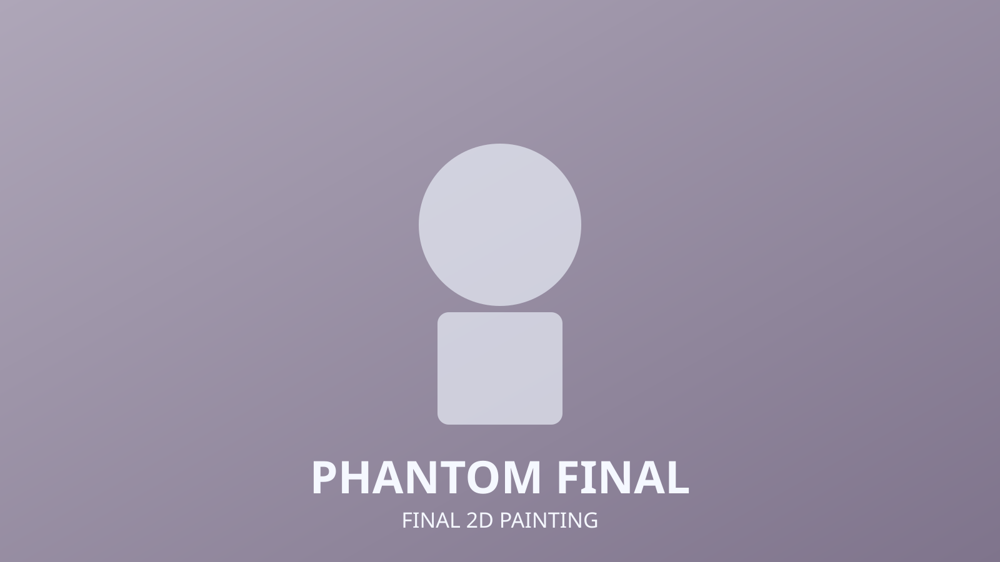

Phantom of the Opera
2D
Illustration
Theatre Mood Study
This 2D piece explores dramatic lighting and costume texture inspired by stage storytelling from Phantom of the Opera. The composition balances romance and tension through shape rhythm and contrast.

Sketch Pass
Early sketches tested gesture direction and camera angle to keep both characters readable in silhouette. Value grouping was decided before color to preserve theatrical focus.
Final 2D Painting
The final painting emphasizes warm spotlight tones against cool shadows, with refined costume folds and mask details to support narrative mood.

